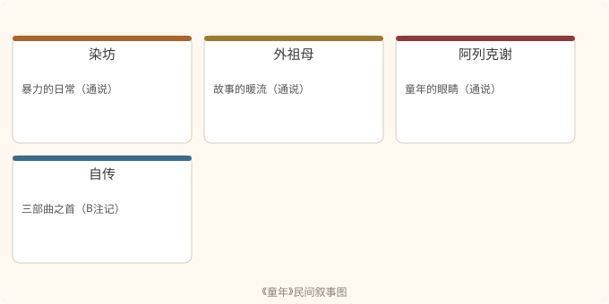

童年
一、基本信息
| 作者 | 马克西姆·高尔基 |
|---|---|
| 成书/出版 | 作者页注记：Britannica——自传三部曲——'one of the finest autobiographies in Russian literature'（年份通说待核——1913-14说） Maxim Gorky — Encyclopaedia Britannica（百科全书） |
| 国别/地区 | 俄国 |
| 时代 | 近代 · 20世纪10年代 |
| 体裁 | 自传小说 |
| 语言 | 俄语 |

《童年》民间叙事图（主题·结构图）
二、创作背景
作者页注记：童年/在人间/我的大学——'自传三部曲（Britannica：one of the finest autobiographies in Russian literature）'。
Britannica：高尔基——俄国作家（作者页语境）。
题材（通说待核）：阿列克谢的童年——外祖父的染坊与外祖母的民间故事。
三、内容脉络
（通说待核）阿列克谢·彼什科夫的童年：暴力与温暖的日常。
（通说待核）外祖母的民间故事与'善'的教育。
四、主要人物表
| 人物 | 身份 | 说明 |
|---|---|---|
| 阿列克谢 | 叙述者（童年高尔基） | （通说待核） |
| 外祖母 | 民间故事的讲述者 | （通说待核） |
五、主题与艺术特点
- 自传三部曲之首（B注记：自传三部曲）。
- '俄国文学最优秀的自传之一'（B注记引语）。
- 民间叙事的教育（通说待核）。
六、影响与评论
- Britannica：'one of the finest autobiographies in Russian literature'（作者页注记）。
Maxim Gorky — Encyclopaedia Britannica（百科全书） - Britannica：高尔基三部曲（作者页注记）。
Maxim Gorky — Encyclopaedia Britannica（百科全书）
七、阅读建议
难点
- 自传与小说的边界。
- 伏尔加河下层生活。
- 《童年》中译本（人民文学等——通说待核）。
- 俄文原版（公有领域状态待核）。
三部曲之首；后接《在人间》《我的大学》。
八、待核实
- 三部曲年份（1913-1922说）核对。
- 阿列克谢/外祖母人名核对（通说）。
- '最优秀的自传'评价（B注记引语）核对。